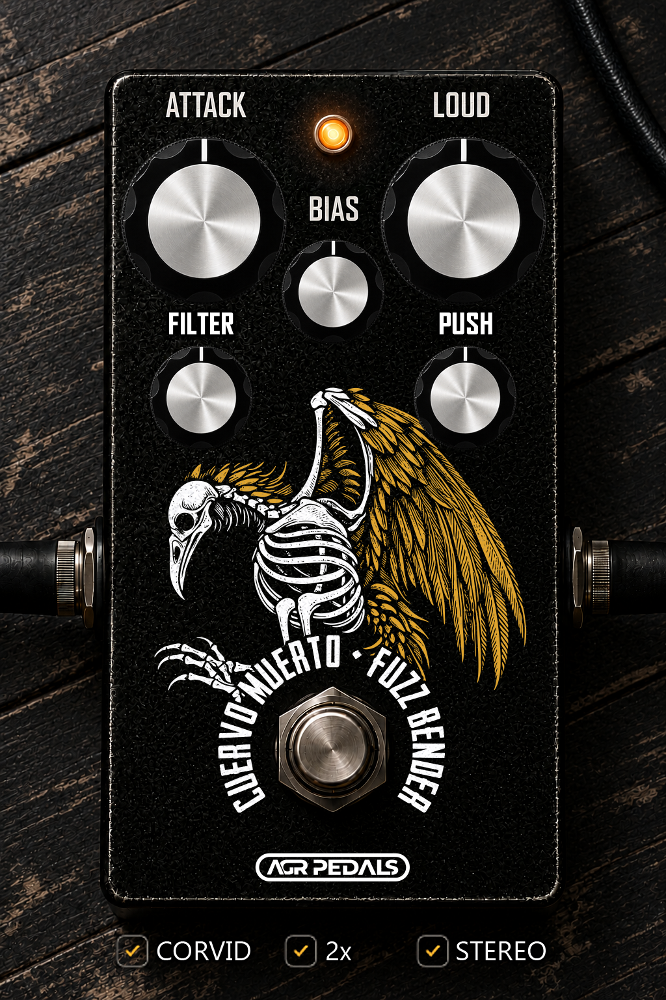

CUERVO MUERTOFUZZ BENDER
Two distinct fuzz voices. One fierce pedal.
CUERVO MUERTO FUZZ BENDER brings the character of a vintage FUZZ TONE and an aggressive BENDER TONE into your DAW. Switch between a warm, dynamic germanium-inspired fuzz and a more aggressive, dense silicon-inspired bender, then shape the sound with pedal controls and studio-friendly tone tools.
Dial in responsive attack, push the output, and use BIAS to explore different degrees of openness, compression, and harmonic character. Refine the signal with input filtering, low and high cuts, noise gate, and a clean blend for adding back your dry tone. Turn on 2X oversampling for increased processing quality, or switch it off when you prefer.
CONTROLS & FEATURES
- AGR FUZR / AGR BENDR
- Choose between the warmer, dynamic fuzz voice and the more aggressive, sustaining bender voice.
- ATTACK
- Adjust saturation intensity and response.
- LOUD
- Set the processed output level.
- BIAS
- Shape compression, asymmetry, and harmonic character from an open fuzz to a gated velcro texture.
- FILTER
- Filter the signal before distortion.
- PUSH
- Control the signal level feeding the fuzz circuit.
- CLEAN BLEND
- Mix the clean input back with the processed sound.
- FOUNDATION
- Functions as a Tilt EQ filter (frequency balance).
- LOW CUT / HI CUT
- Shape the processed signal’s low and high frequencies.
- GATE
- Reduce noise when the input signal falls below the gate setting.
- 2X OVERSAMPLING
- Toggle 2× oversampling.
- CORVID
- Engages a high-gain, saturated circuit.
- Effect ON/OFF
- Toggle the pedal effect with the footswitch.
From raw, snarling fuzz to shaped, mix-ready tone—Cuervo Muerto puts two distinct fuzz characters under your feet.